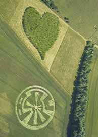
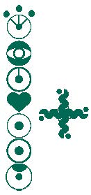
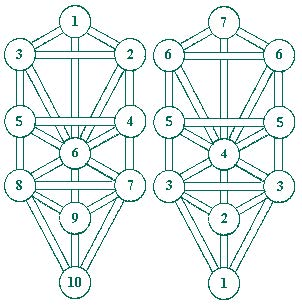
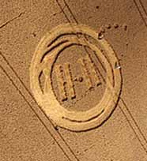
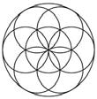
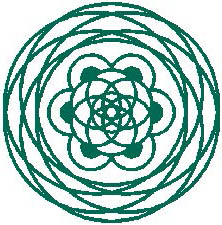

Eighteen years ago my article, Crop Circle Mystery, appeared in the Dream Network Journal.1 The messages being conveyed by the Circles have become clearer since then. Several ideas mentioned in that old article have evolved a great deal. It’s time for an update.
I believe the primary, symbolic message conveyed by the Circles is that humanity has been on a timecycle path that corresponds to the seven chakra levels of consciousness evolution. We are near the “three and a half” midpoint and close to a leap to the fourth, heart chakra level. The idea became clear to me in 19932 and was confirmed in 2004, when the Chakra System crop circle formation appeared.3

Figure 1 is a diagram of the formation. The heart shape represents the fourth chakra, which is the heart chakra. The sixth chakra—or third eye chakra—is the “eye” type glyph. The seventh or crown chakra, is at the top, and includes three lines that project toward the three small circles above. This fits with Kether (the Crown) at the top of the Tree of Life, which appeared as a crop formation in ‘97.4
A cross-type glyph adjacent to the chakra glyphs, appeared two days prior. Significantly, it is aligned between the third and fourth chakras. The arrangement of the two crop formations is similar to universal archetypes, such as an illustration one can find in the Egyptian Book of the Dead and the Navaho sand painting called the Pollen Path.
When we read the Book of Revelation in this light, we can draw similar conclusions. The key verse is Revelation 11:11, where the two trees stand up after three and a half days of being dead. Three and a half is the midpoint of seven, signifying the fourth heart chakra.
The cross (moved a bit closer in the diagram) is like an axis mundi, but also like a swastika. My dreams and research indicate that the swastika is a symbol of mankind as Demiurge, the co-creator of the physical world. Indications are that the future Demiurge is symbolized by Communion, as people become part of the Body of Christ... when they reach the heart chakra level.
Prior to my study of ancient symbols, I had a dream of a counterclockwise Swastika. Energy was flowing from the center, out into the arms. A voice said,
“These are the forces going out from the center to experience negative manifested events, in order to learn. It is generally square, and you circle counterclockwise.”
My dream indicated to me that a counterclockwise—west going— swastika symbolizes a negative, yet learning, experience. The clockwise swastika—east going—symbolizes a positive “good luck” experience (the Nazis not withstanding).
A standard swastika is composed of four “builder” glyphs—the L-shaped right-angled squares used by carpenters, masons and other craftsmen. Swastikas are also formed with four horns. The verses of Zechariah 1:18- 21 tell of the four horns that scattered the nations, and of the four “smiths” (or carpenters) who come to cast down the four horns. I envision the cross/swastika glyph crop formation as moving upward in time, switching to clockwise at the heart chakra.
During the time cycle, I believe we have been unconscious co-creators, symbolized by being underground, underwater or in the water. After the change, we will become conscious co-creators, symbolized by reaching land and becoming lion-kings with royal power who recover their kingdoms.5 The bottom sphere of the Tree of Life is Malkuth, the Kingdom. Some readers may have had dreams that contain these types of symbols.
Examples of symbols that indicate the unconscious are various water animals, such as fish, sharks, jellyfish and the octopus; boats, ships and submarines also apply. In some cases, the unconscious is symbolized by underground rooms or chambers underground. There is sometimes a descent followed by an assent to the surface (of consciousness). Underground creatures, such as rabbits, can also relate. Foods (for thought) that grow underground, such as potatoes and carrots, may apply.
Dreams of the chakras6 include various symbols, such as flowers, dishes, coins, umbrellas, or other circular or spherical objects. Colors can be clues, especially yellow (third chakra) and green (fourth chakra). Animals related to flowers can also apply, such as bees, hummingbirds, and butterflies... symbols of transformation.
Other dreams relate to various animals, such as dogs, wolves, monkeys and apes. These are symbolically related to the lower three chakras, which are the animal instincts. This can be symbolized by the lower part of the human body as animal. We are to transmute the aggressive attributes from negative to positive. Black or white animals often indicate this.
The “virgin birth,” according to Joseph Campbell, is the birth of the spiritual person out of the animal person, which happens at the heart chakra. This can be symbolized in a dream by the lower part of the body missing. Dreams of trees may also be related.
Various spheres of the Tree of Life correspond to the chakras. Figure 2 illustrates the relationship of the chakras to the Tree of Life.

The tree on the left shows the traditional Tree of Life with ten spheres, numbered one through ten. The tenth sphere represents the earth plane. The upper spheres represent dimensions above our plane which influence us. The left pillar (spheres 3, 5, and 8) is symbolically feminine and associated with judgment. The right pillar, (spheres 2, 4 and 7) is symbolically masculine and associated with forgiveness and love. The middle pillar (spheres 1, 6, 9, and 10) represent a balance of the left and right pillars. I believe a primary message from the crop circles is that there will be a balance of our dualities and a return of the feminine.
The tree illustrated on the right in Figure 2 shows the seven chakras, as they relate to the Tree of Life. Two spheres connected by a pathway form the third chakra. Such “dumbbell” shapes are common in crop circles.
Often, there are four rectangular boxes next to the pathway in dumbbell type formations. This is apparently related to the worldwide 11:11 coincidence phenomena.7 In August 2010, a Mayan 11:11 type crop formation appeared. This is probably related to the end of the Mayan calendar, which occurs on December 21, 2012, at 11:11 AM Universal Time.

Sphere six of the Tree of Life corresponds to the fourth heart chakra. During the time cycle, the sixth sphere is symbolized by the Seed of Life.

The Seed of Life is also associated with the Omphalos, a dome-shaped stone found at ancient sites, such as Delphi. It is symbolically the center of the world, a type of axis mundi. Dreams indicate that such a dome is a symbol of the reality we each create, our perception of reality as the circle of the horizon with sky canopy. A dream reported to me in 1991 indicated that our dome of the world perception of reality is being healed.
"I was on a starship in space with other people. An extremely important message was trying to come in but it couldn’t until we first ejected the garbage. I ran frantically and managed to eject it. The message came in over a console with lights flashing. A doctor appeared and led the crew into a bedroom. He began to work on a yard-high mound of jelly-like substance at the foot of the empty bed. Suddenly, I saw a human-sized hand puppet, a male/female pair with only one hand-hole. They fell back into a vat of water. I went over and looked down at them under the water and knew they had to change. They had to change."
As humanity makes its leap to the heart chakra, the Seed of Life will open like the aperture of a camera, or like a flower blossoming. One example is the 2003 crop formation that appeared at Devils Arrows in the UK (Figure 4)

Other crop formations show the geometry after the opening. These types have a twelve-fold flower-like design on the outside, with a six-fold design in the center, such as a Star of David. This is similar to the traditional symbol of the heart chakra.
The pathway of the “dumbbell” representing the third chakra—between spheres seven and eight on the Tree of Life—is associated symbolically with the Tower tarot card, which shows a tall building on fire with people jumping off. I certainly thought of this when I watched the horrible events of September 11, 2001.
My research indicates that the Tree of Life is often part of the dream landscape in various forms. The pathways can be sidewalks, pathways, roadways, highways, or waterways, for example. Symbols of the spheres can be various buildings or areas, such as lakes, forests, mountains, or parking lots. The third chakra dumbbell pathway can be a bridge, overpass, river or stream. Actual trees often appear in such dreams.
In other dreams, one’s house or other buildings can represent the Tree, with hallways as pathways and rooms as spheres. The various floors of multi-storied buildings, including underground rooms, can represent the chakra levels, or rungs of the Tree of Life. The same goes for ladders and stairways. The seven chakras and the Tree of Life are also within the human body.
The media has routinely presented the crop circles as man-made hoaxes. Most serious researchers disagree. They believe most of the formations are not man-made, because there is quite a lot of evidence to that effect.9 In my view, the crop circles are significant, man-made or not. Artists of all kinds receive inspirations, which I believe come from the dream world. The creators of crop circles are apparently the collective unconscious of mankind. “They” are us!
Let’s hope my next update will come sooner than eighteen years! ∞
References
(1) Dream Network Journal, Volume 11, No. 4, 1992 http://www.greatdreams.com/dnjart/jocrop.htm
(2) Humanity On The Pollen Path http://www.greatdreams.com/plpath1.htm
(3) The Chakra System Crop Circle Formation http://www.greatdreams.com/crop/chksys/chksys.htm
(4) The Tree of Life Crop Circle Formation http://www.greatdreams.com/treeol.htm
(5) Dreams and Mythology of Cats, and Other Felines http://www.greatdreams.com/cats/cats.htm
(6) Chakra Dreams, Visions, and Experiences http://www.greatdreams.com/chakradrms.htm
(7) Coincidence and 11:11 http://www.greatdreams.com/11coin.htm
(8) 2010 Crop Circle Formations Chakra Messages - The Crossover - Humanity’s Leap to the Heart Chakra http://www.greatdreams.com/crop/2010ccs/2010ccs.htm & The Great Pyramid and the 153 Fish in the Net http://www.greatdreams.com/numbers/jerry/153.htm
(9) Arguments Against the Hoax Theory of Crop Circles http://www.greatdreams.com/crop/hoax/hoax.htm